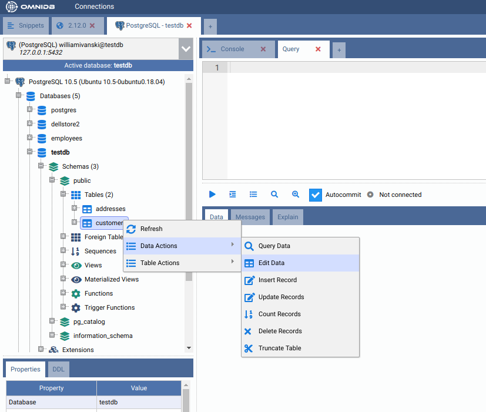
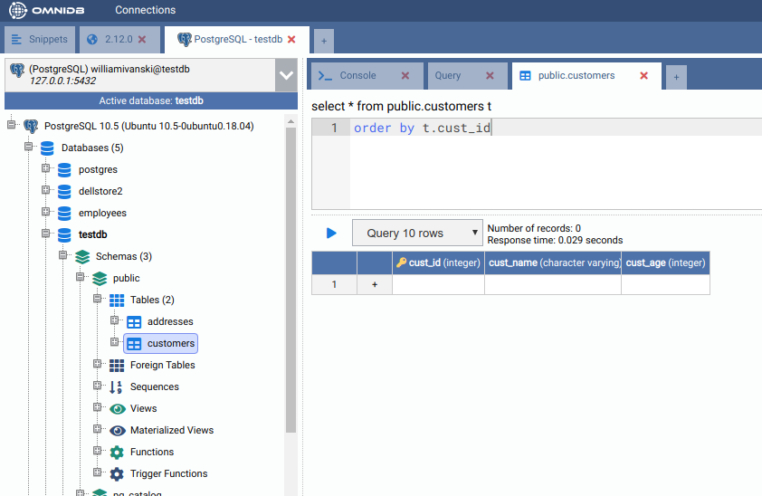
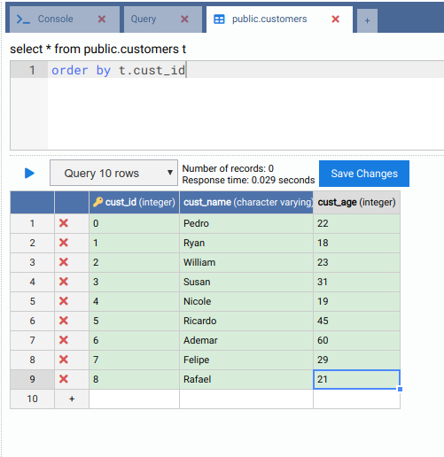
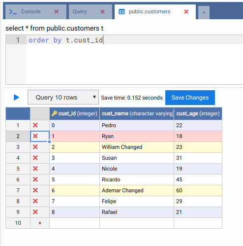
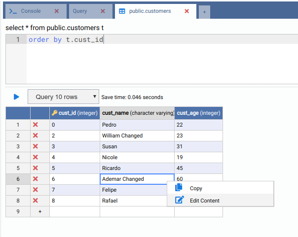
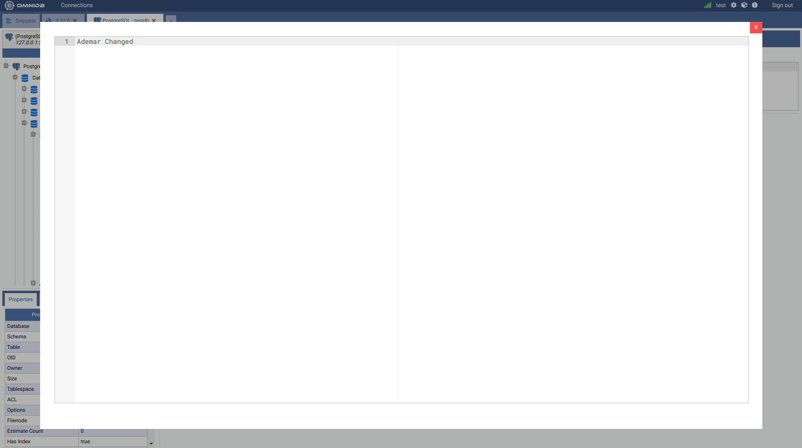
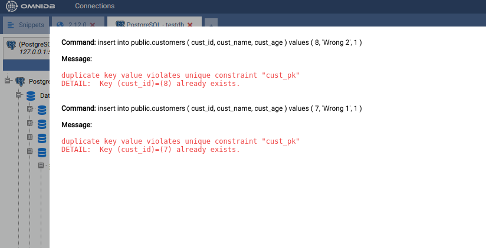
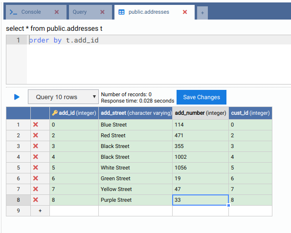

6. Managing Table Data
The tool allows us to edit records contained in tables through a very simple and intuitive interface. Given that only a few DBMS have unique identifiers for table records, we opted to allow data editing and removal only for tables that have a primary key. Tables that do not have it can only receive new records.
To access the record editing interface, right click the table node and select the action Data Actions > Edit Data:


The interface has a SQL editor where you can filter and order records. To prevent that the interface requests too many records, there is a field that limits the number of records to be displayed. The records grid has column names and data types. Columns that belong to the primary key have a key icon next to their names.
The row of the grid that have the symbol + is the row to add new records. Let
us insert some records in the table customers:

After saving, the records will be inserted and can be edited (only because this table has a primary key). Let’s change the cust_name of some of the existing records and, at the same time, let's remove one of the rows:

Tables can have fields with values represented by very long strings. To help edit these fields, OmniDB has an interface that can be accessed by right clicking the specific cell:


The interface detects errors that may occur during operations related to
records. To demonstrate, let us insert two records with existing cust_id
(primary key):

It shows which commands tried to be executed and the respective errors.
To complete this chapter, let’s add some records to the Address table:
